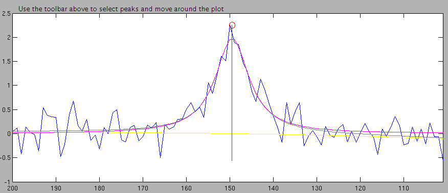
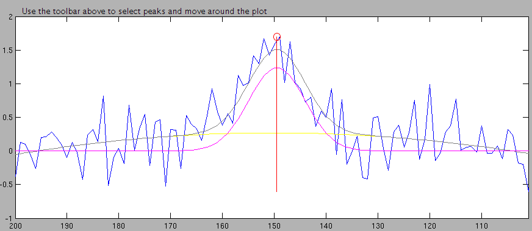
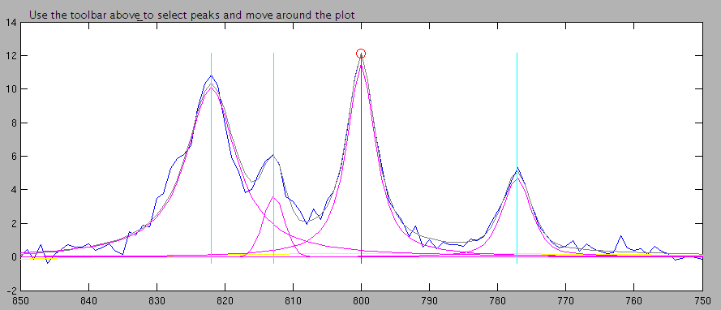
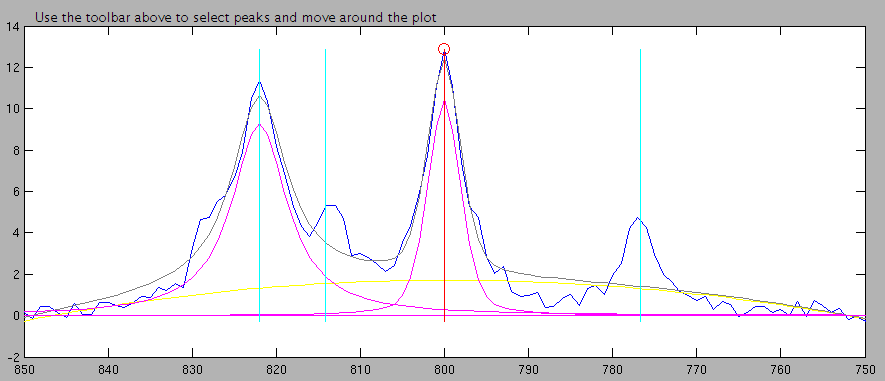
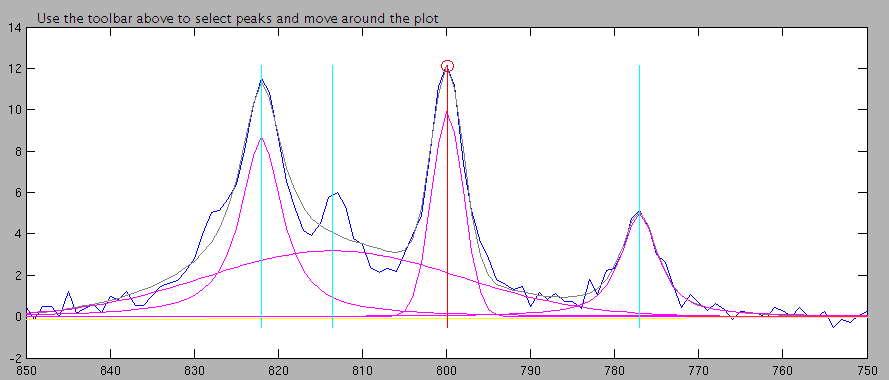
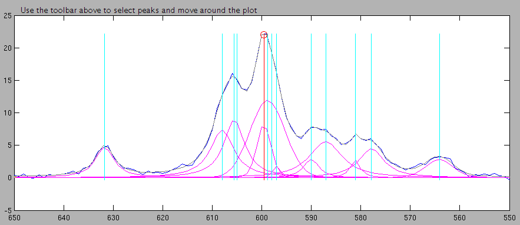

Good news:For isolated peaks with a good SNR (I used 20:1), the software works fine (though error doubles if the peaks are very narrow (half-height width of 2 samples)).
Bad news:For peaks with low SNR or in a congested area, the errors are 20% and up.
Good news:It is likely that I can fix the majority of the problem for the low peaks and the moderately congested areas. My highly congested area may be so congested that there is really no hope for any algorithm.
I tested the targeted deconvolution by creating 20 spectra with 7 bins each. The bins with a single peak had the peak at the center and a 100 sample width. Bins with multiple peaks were 200 samples wide but only had peaks in the center 100 samples, giving 50 samples for the signal to die out and not affect the other bins very much. 100 samples is the number of x values in 0.0430 ppm in the ANIT study. After generation of the signal, white pseudo-random zero-mean Gaussian noise with a standard deviation of 0.3 units was added.
In the congested regions, all peaks were purely Lorentzian and had a half-height width of 10 samples. The target peak had a SNR of about 40:1 and the other peaks had SNRs that ranged from 10-20.
|
Center |
564 |
577 |
581 |
587 |
590 |
597 |
598 |
599 |
600 |
605 |
606 |
608 |
632 |
|---|---|---|---|---|---|---|---|---|---|---|---|---|---|
|
Base SNR |
10 |
12 |
13 |
13 |
12 |
13 |
10 |
13 |
40 |
14 |
18 |
20 |
14 |
The target peak is at 600.
|
Center |
777 |
800 |
813 |
821 |
823 |
828 |
|---|---|---|---|---|---|---|
|
Base SNR |
16 |
40 |
15 |
20 |
19 |
10 |
The target peak is at 800.
A picture of one generated spectrum follows:
The target peaks are circled in red, the bin identifiers are written by the peaks in purple, and below the congested regions, the number of peaks in the region is written in green.
For the isolated peaks, the error in estimation was the same whether the peaks were detected or known a-priori. For the congested areas, there was a difference between perfectly known peak locations and detected locations, but it depended on the characteristics of the congested area.
Of the tall, isolated peaks, estimation was consistent with a slight bias towards underestimation. Error doubled when the peak was made very narrow.
The short isolated peaks had much higher errors than the tall peaks. Lorentzian-ness did not appreciably affect the absolute error. However, it did significantly change the bias. The half-Lorentzian peak had a bias on the order of 10% of the fully Lorentzian peak in both the perfect and detected peak conditions.
The narrow, short peaks had twice the error of any other isolated peak. They were highly biased toward overestimation. This bias was mitigated somewhat by detecting the peak location rather than using the true location.
The congested areas performed much worse than the isolated peaks. However, with a-priori known peak locations, the moderately congested area (1000006) had livable error with a mean of 8.54%. When the locations were not known, that error went up to 30.26%.
The worst error was for the highly congested area. Individual estimates were more than double the actual in some cases. On average, even with perfect peaks, it returned an error of 51%, greatly underestimating the size of the peak most of the time.
One easy to overlook factor in the measurement of the individual peaks with low SNR is that the small area magnifies the percentage error for the same absolute error. If a peak has an area of 20 and the estimate is off by 1, this is a 5% error. But if it has an area of 2 and the estimate is off by 1, this is a 50% error. A lower SNR intrinsically means that the estimation error will be larger. However, I would think that we can surely do better than 20% for the wider small peaks.
To understand the poor performance, I looked carefully at the deconvolutions for ids 1000006 and 1000001 (bins 6 and 1 respectively) in the detected peaks condition. Not knowing the what the errors were for each spectrum, I divided the spectra into two groups depending on whether the deconvolutions looked reasonable or not to my eye. For bin 1, I called the deconvolution reasonable if the baseline seemed to be in the right place and not too curved. For bin 6, I additionally called deconvolutions with peaks that were way too wide unreasonable.
For bin 1, I selected 8 spectra as having reasonable deconvolutions and 12 as unreasonable. For bin 6, only 6 spectra were reasonable and 14 were unreasonable. In bin 1, the reasonable spectra had a mean error of 9.8% whereas the unreasonable spectra had a mean error of 31%. In bin 6, the difference was even more pronounced. The reasonable spectra had a mean error of 6% versus 41% for the unreasonable spectra.
The estimated baseline is in yellow, the estimated peaks are in magenta. The fitted curve (the baseline + sum of peaks) is in gray. The original spectrum is in blue.





The two bins I examined in detail shared the common problem of bad baseline estimation. In bin 1, this was the only factor I used in selecting my unreasonable deconvolutions. In bin 6, 9 of the 14 spectra I selected were selected because of bad baseline estimation.
I believe I can fix much of the problem by allowing the user to add simple constraints on the baseline. If the baseline is constrained to be a constant or a straight line then it can't curve up very much to take area away from actual peaks. By making this a user-settable parameter, I can give the user the ability to allow the baseline to curve when he feels that it needs to. This estimation is likely to work because my eyeball selection of peaks with good baselines was able to substantially reduce the error on this test set.
The big peaks are another problem. They are much less common when there is a perfect information on the location of peaks. (14 under detected peaks and 5 under perfect peaks). This is partially caused by the reduction in bad baseline fits under perfect peak locations (9 under detected and 3 under perfect). Since the bad baseline is highly correlated with having a broad peak in bin 6, one would expect the decrease.
However, there are several cases in both the perfect condition (2, 5, 14) and in the detected condition (1, 8, 9, 12, 15) where there is a broad peak but the baseline is reasonable.
The cause of this phenomenon is not obvious. It appears that they are a bad and broad local minimum in the search space for correct peak widths. Maybe introducing a bit of randomization in the initial conditions could provide a way out.
This will take some experimentation to solve.

The worst errors in the test came from bin 5 (spectrum 12 pictured above - the error is 66%). I believe a lot of the problems stem from the fact that there are peaks at 597, 598, 599, and 600. Those peaks are located at adjacent samples, so it is hard for any technique to resolve them. Even though their sum is different than it would be if they were of different heights and widths the noise makes distinguishing such small variations very challenging. To deconvolve those peaks would take a lot more a-priori information than we have available right now. In certain circumstances with a number of different spectra it might be possible to use the information encoded in the peak-shifts to locate which peak is where in each spectrum. However, at the moment, resolving these peaks is, at best, a difficult research topic at best; it may be impossible.
The reason this spectrum has so many close peaks is that I got my initial peak locations from random.org - which generates true random numbers. I then moved peaks away from the target peak to make it visible. However, I was looking at the list of numbers in unsorted order and I overlooked 597, 598, and 599 as being close to 600 since they didn't start with 6. I left this in there because I was almost done with the final test when I figured out what had happened and I didn't want to spend another 4 hours re-doing the 140 deconvolutions.
My next step will be to modify the architecture of the targeted deconvolution to allow different models with different types of constraints. Then I will implement baseline constraints and retest the code with them.
From there, I am not sure where I will go. I may look at the areas of the spectrum that Isaie is interested in and try to simulate them with artificial spectra and look at the performance of the code on those spectra. This would give us more confidence in the results if the performance is acceptable, or a target to shoot for if it is not.
I may also implement a few more constraints - treating peaks under the influence of j-coupling differently will speed up the estimation and also improve its quality.
| Quantization Method | Mean pct | Std dev | Mean % difference | Std dev % difference | Lorentzian-ness | Half Height Width (samples) | SNR of Target (x±1:1) |
Number of Peaks | ID |
|---|---|---|---|---|---|---|---|---|---|
| Perfect Peaks | 5.14 | 6.11 | -3.64 | 7.15 | 1 | 20 | 20 | 1 | 1000000 |
| Perfect Peaks | 22.32 | 15.24 | -18.88 | 19.53 | 1 | 20 | 6 | 1 | 1000001 |
| Perfect Peaks | 21.45 | 15.05 | 1.41 | 26.62 | 0.5 | 20 | 6 | 1 | 1000002 |
| Perfect Peaks | 9.71 | 7.48 | -1.65 | 12.34 | 1 | 2 | 20 | 1 | 1000003 |
| Perfect Peaks | 45.19 | 41.91 | 19.90 | 59.07 | 1 | 2 | 6 | 1 | 1000004 |
| Perfect Peaks | 51.32 | 21.94 | -49.46 | 26.05 | 1 | 10 | 40 | 13 | 1000005 |
| Perfect Peaks | 8.54 | 12.54 | -7.07 | 13.47 | 1 | 10 | 40 | 6 | 1000006 |
| Detected Peaks | 5.11 | 6.09 | -3.67 | 7.10 | 1 | 20 | 20 | 1 | 1000000 |
| Detected Peaks | 22.24 | 15.28 | -18.80 | 19.55 | 1 | 20 | 6 | 1 | 1000001 |
| Detected Peaks | 20.59 | 15.18 | 1.88 | 25.94 | 0.5 | 20 | 6 | 1 | 1000002 |
| Detected Peaks | 9.71 | 7.48 | -1.65 | 12.34 | 1 | 2 | 20 | 1 | 1000003 |
| Detected Peaks | 44.36 | 39.18 | 8.19 | 59.46 | 1 | 2 | 6 | 1 | 1000004 |
| Detected Peaks | 31.04 | 38.69 | 25.57 | 42.70 | 1 | 10 | 40 | 13 | 1000005 |
| Detected Peaks | 30.26 | 18.84 | -29.99 | 19.28 | 1 | 10 | 40 | 6 | 1000006 |
| Hand Binned | 10.48 | 2.92 | -10.48 | 2.92 | 1 | 20 | 20 | 1 | 1000000 |
| Hand Binned | 23.47 | 5.11 | -23.47 | 5.11 | 1 | 20 | 6 | 1 | 1000001 |
| Hand Binned | 11.69 | 6.80 | -11.26 | 7.53 | 0.5 | 20 | 6 | 1 | 1000002 |
| Hand Binned | 7.74 | 7.07 | 1.76 | 10.48 | 1 | 2 | 20 | 1 | 1000003 |
| Hand Binned | 19.02 | 15.86 | -7.07 | 24.07 | 1 | 2 | 6 | 1 | 1000004 |
| Hand Binned | 54.47 | 2.02 | 54.47 | 2.02 | 1 | 10 | 40 | 13 | 1000005 |
| Hand Binned | 7.16 | 1.33 | -7.16 | 1.33 | 1 | 10 | 40 | 6 | 1000006 |
| Perfect Peaks |
Detected Peaks | Hand-binned | ID |
|---|---|---|---|
| 5.14 | 5.11 | 10.48 | 1000000 |
| 22.32 | 22.24 | 23.47 | 1000001 |
| 21.45 | 20.59 | 11.69 | 1000002 |
| 9.71 | 9.71 | 7.74 | 1000003 |
| 45.19 | 44.36 | 19.02 | 1000004 |
| 51.32 | 31.04 | 54.47 | 1000005 |
| 8.54 | 30.26 | 7.16 | 1000006 |